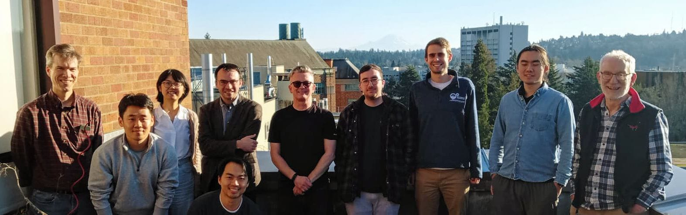
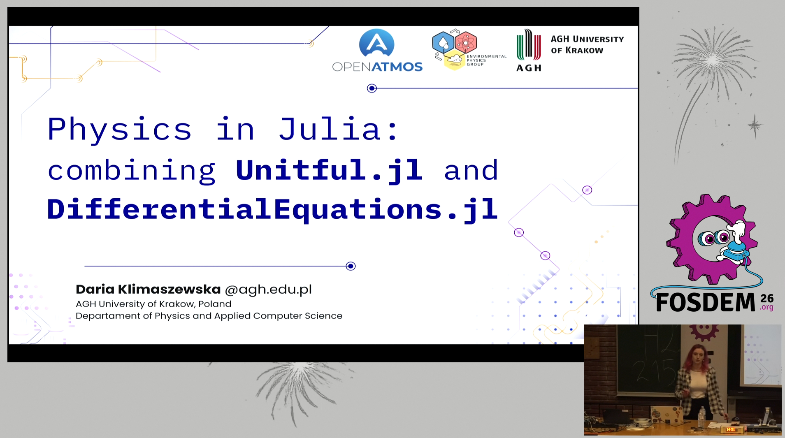

Exploring Cloud Microphysics Modeling Concepts the Pythonic Way
scope of the paper and this talk
Introduction
- aerosol size spectrum sampling
unit-aware coding and plotting
- parcel model governing equations
- JIT compilation using Numba
- parcel ODE system definition
test-time dimensional analysis using Pint
- initial condition at equilibrium
- ODE integration and result analysis
- Super-Droplet Method algorithm
- SDM against analytic solution
Summary
Code availability


Issue: units in code (example: ideal gas density)
\[\rho = (p M) / (T R)\]
p = 1000 # pressure [mbar]
T = numpy.linspace(250, 300) # temperature [K]
R = scipy.constants.R # gas constant [J/K/mol]
M = (0.78 * 2 * mendeleev.N.atomic_weight + # molar mass [g/mol]
0.22 * 2 * mendeleev.O.atomic_weight)
rho = (p * M) / (R * T)
fig, axs = plt.figure(), plt.gca()
axs.plot(T, rho)
axs.set(ylabel="density", xlabel="temperature")
“
Issue: units in comments not in code
The interpreter is not parsing the comments! We always use units on paper, use it in code as well.
- What is the unit of the plotted data?

- Reading the code, one needs to go to the definition each time.
\(T\) is time or temperature?
- No way of enforcing changes in usage upon change of definition.
- After changing the value — did you change the comment? (We all know the answer…)
physical units with Pint (example: ideal gas density)
\[\rho = (p M) / (T R)\]
import pint
SI = pint.UnitRegistry()
SI.setup_matplotlib()
pressure = 1000 * SI.mbar
temperatures = numpy.linspace(250, 300) * SI.K
gas_const = scipy.constants.R * SI.J / SI.K / SI.mol
molar_mass = (0.78 * 2 * mendeleev.N.atomic_weight +
0.22 * 2 * mendeleev.O.atomic_weight) * SI.g / SI.mol
density = (pressure * molar_mass) / (gas_const * temperatures)
plt.plot(temperatures, density)
- changed names of variables
- axis labels automatic
Can we …
- … change units on plot?

- … change axes labels and still use units?

Can we …
- … change the units to the wrong ones?
ConversionError: Failed to convert value(s) to axis units: <Quantity([1000], 'millibar')>

- … put different quantities on same axis?
no excuse for coding without units, let’s teach it!
“hacking aerosol-cloud μ-physics modeling concepts in Python”
University of Washington, Jan 2026, Erasmus+ in Seattle

FOSDEM 2026 (Jan/Feb)
Université libre de Bruxelles

“Gluing SciPy, Numba, and Pint to Bridge High Performance with Maintainability”
EuroScipy 2026 (Jul, Wydział Informatyki AGH)

- AGH courses: PP, PI, MUP, MPS, RSE, MPTS, PTS…
From executable code to a reproducible scientific paper

Idea
- Cloud microphysics as a case study
- Executable code embedded in the paper
- Ready-to-use workshop materials
- Reproducible results and figures

Venue
- Geoscientific Model Development (GMD)
- Review and perspective paper
- GMD’s reproducibility requirements

Tools
- Jupyter for executable code
- Quarto for paper generation
- Automated tests and reproducible outputs
One executable source \(\leadsto\) Paper + Figures + Workshop
Reproducible by authors, editors, reviewers, and readers
Habemus Python https://habemus-python.github.io